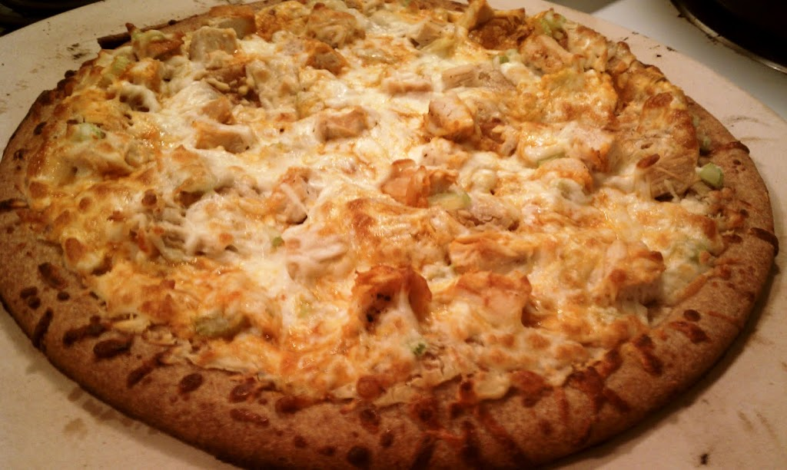
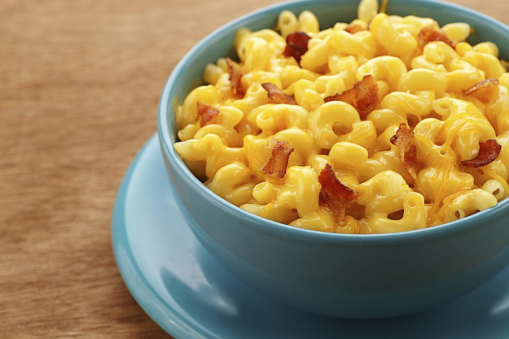

I really love food with a passion but my two favorite foods are Buffalo Chicken Pizza and Mac and Cheese. Included are my favorite recipes.
Buffalo Chicken Pizza
- Preheat the oven to 400.
- Dice the cooked chicken.
- Melt the butter, add the hot sauce and toss with the chicken.
- Spread the ranch dressing on the pizza crust.
- Top with the chicken.
- Sprinkle on the cheese and bake for 10-12 minutes (or until the cheese is lightly browned).

Mac and Cheese
- Cook macaroni according to box directions and set aside.
- In a medium saucepan melt butter over low heat. Add flour and stir constantly until smooth.
- Turn heat to medium and add milk stirring constantly until thick. (About 10 minutes).
- Add hot sauce. Stir until mixed in evenly.
- Add pasta, bacon and cheese. Mix until cheese melts, bacon is mixed in, and pasta is evenly coated.
- Pour macaroni and cheese into a 9x13 baking dish and top according to taste.
- Bake in preheated oven at 350 degrees for about 25-30 minutes. (If using parmesan cheese and breadcrumbs take it out when the top looks lightly browned. If using cheddar cheese topping take out when top becomes darkened, but not burnt.).
